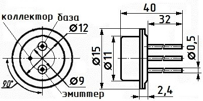
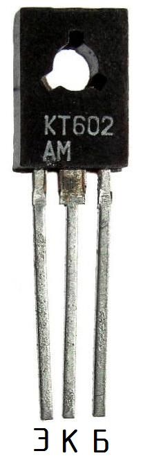

Транзистор КТ602
Транзистор КТ602 - планарный, кремниевый, структуры n-p-n. Основное назначение - усиление и генерирование сигналов.
Транзисторы 2Т602А и 2Т602Б имеют металлостеклянный корпус и гибкие выводы. Масса не более 5 г.

Рис. 1 - Размеры и цоколевка транзистора 2Т602
Транзисторы КТ602АМ, КТ602БМ, 2Т602АМ, 2Т602БМ имеют жёсткие выводы и пластмассовый корпус КТ-27 (ТО-126). Масса не более 2 г.


Рис. 2 - Размеры и цоколевка транзисторов КТ602АМ, КТ602БМ, 2Т602АМ, 2Т602БМ
Таблица 1
| Коэффициент передачи тока (статический). Схема с ОЭ при Uкб = 10 В, Iэ = 10 мА: | |
| КТ602АМ, 2Т602АМ, 2Т602А | 20...80 |
| 2Т602БМ, 2Т602Б | 50...200 |
| КТ602БМ, не менее | 50 |
| КТ602АМ, 2Т602АМ при Т = -60 °C, КТ602АМ при Т = -45 °C | 5...80 |
| 2Т602Б, 2Т602БМ при Т = -60 °C | 12...200 |
| КТ602АМ, 2Т602АМ при Т = +125 °C, КТ602АМ при Т = +85 °C | 50...500 |
| Граничная частота коэффициента передачи тока. Схема с ОЭ
при Uкэ = 10 В, Iк = 25 мА, не менее |
150 МГц |
| Граничное напряжение при Iэ = 50 мА, не менее | 70 В |
| Напряжение насыщения КЭ при Iк = 50 мА, Iб = 5 мА, не более | 3 В |
| Напряжение насыщения БЭ при Iк = 50 мА, Iб = 5 мА, не более | 3 В |
| Постоянная времени цепи обратной связи на высокой частоте
при Iк = 10 мА, Uкб = 10 В, f = 2 МГц, не более |
300 пс |
| Ёмкость коллекторного перехода при Uкб = 50 В, не более | 4 пФ |
| Ёмкость эмиттерного перехода при Uкб = 0, не более | 25 пФ |
| Ток коллектора (обратный) при Uкб = 120 В, не более: | |
| 2Т602А, 2Т602Б, 2Т602АМ, 2Т602БМ | 10 мкА |
| КТ602АМ, КТ602БМ | 70 мкА |
| Ток КЭ (обратный) при Uкэ = 100 В, Rбэ = 10 Ом, не более: | |
| 2Т602А, 2Т602Б, 2Т602АМ, 2Т602БМ | 10 мкА |
| КТ602АМ, КТ602БМ | 100 мкА |
| Ток эмиттера (обратный) при Uэб = 5 В, не более | 50 мкА |
Таблица 2
| Напряжение К-Б (постоянное): | |
| 2Т602А, 2Т602Б, 2Т602АМ, 2Т602БМ: | |
| Тп = +100 °C | 120 В |
| Тп = +150 °C | 60 В |
| КТ602АМ, КТ602БМ: | |
| Тп ≤ +70 °C | 120 В |
| Тп = +120 °C | 60 В |
| Напряжение коллектор-база (импульсное) 2Т602А, 2Т602Б, 2Т602АМ, 2Т602БМ: | |
| Тп = +100 °C | 160 В |
| Тп = +150 °C | 80 В |
| КТ602АМ, КТ602БМ при Тп = +70 °C | 160 В |
| Напряжение К-Э (постоянное) при Rбэ = 1 кОм: | |
| 2Т602А, 2Т602Б, 2Т602АМ, 2Т602БМ: | |
| Тп = +100 °C | 100 В |
| Тп = +150 °C | 50 В |
| КТ602АМ, КТ602БМ: | |
| Тп ≤ +70 °C | 100 В |
| Тп = +120 °C | 50 В |
| Постоянное напряжение Э-Б | 5 В |
| Ток коллектора (постоянный) | 75 мА |
| Ток коллектора (постоянный) при tи ≤ 1 мкс | 500 мА |
| Ток эмиттера (постоянный) | 80 мА |
| Рассеиваемая мощность коллектора (постоянная): | |
| без теплоотвода: | |
| Тп ≤ +25 °C | 850 мВт |
| Тп = +125 °C для 2Т602А, 2Т602Б, 2Т602АМ, 2Т602БМ | 160 мВт |
| Тп = +85 °C для КТ602АМ, КТ602БМ | 200 мВт |
| с теплоотводом: | |
| Тп ≤ +25 °C | 2,8 Вт |
| Тп = +125 °C для 2Т602А, 2Т602Б, 2Т602АМ, 2Т602БМ | 560 мВт |
| Тп = +85 °C для КТ602АМ, КТ602БМ | 650 мВт |
| Тепловое сопротивление: | |
| Переход - окружающая среда | 150 °C/Вт |
| Переход - корпус | 45 °C/Вт |
| Температура p-n перехода: | |
| 2Т602А, 2Т602Б, 2Т602АМ, 2Т602БМ | 150 °C |
| КТ602АМ, КТ602БМ | 120 °C |
| Рабочая температура (окружающей среды) | -60...+125 °C |